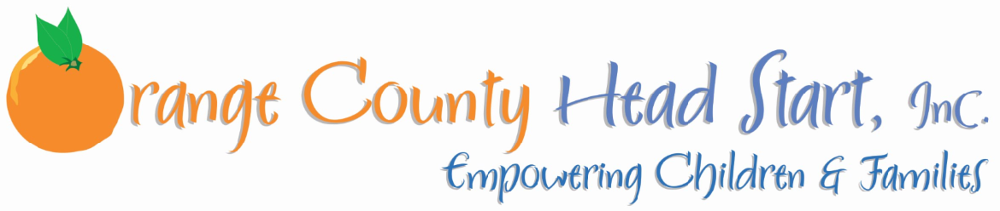
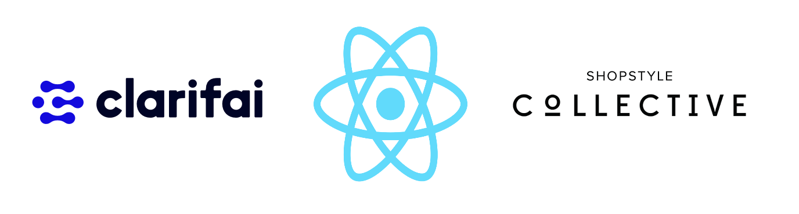

MY WORK
Here are some of my latest projects.


UX Designer by day, Bowler by night
Hello! I am a senior undergraduate student at the University of California, Irvine where I am double majoring in Informatics with a specialization in Human-Computer Interaction, and Linguistics. My experiences at UCI have sparked my passion for UX Design and front-end development, which I hope to pursue after I graduate. I want to be able to create clean and accessible designs that can be universally beneficial. I take everyday as a learning opportunity and am excited to find something that will allow me to grow both personally and professionally.
Cynthia Aguilar
Here are some of my latest projects.
ROLE
UI Designer & UX Researcher
TASK
Classroom project to redesign an existing app using evidence-based design and UX research methodologies.
DURATION

April 2018 to June 2018 (10 weeks)
Thuuz is a mobile sports application that provides its users with game statistics and highlights of their favorite sports. However, the app differentiantes itself from its competitors with an unique algorithm that determines the excitement of games and ranks them based on a numerical scale from 0-100. Although it is a promising feature, it is unfortunately masked by the various usability issues found through user research our team conducted.
ROLE
Business Analyst, Front-End Developer, UI Designer
TASK
Classroom project to create working software for a sponsor of our choice in an agile environment.
DURATION
April 2018 to June 2018 (10 weeks)
Our sponsor is a non-profit organization dedicated to serving at-risk families in Orange County. Their purpose is to provide these families support, by enrolling kids in head start programs and empowering the parents by providing them tools to ensure the success of their children
ROLE
Front-End Developer, UX Designer
TASK
Classroom project to solve a current world problem with an emerging technology.
DURATION
January 2019 to March 2019 (10 weeks)
Our team decided to try and find a solution that could help bring awareness to or provide some sort of relief to climate change. We acknowledged that it is a large and difficult issue, so we found a niche topic that was doable and still addresses climate change and sustainability. We found fast fashion to have one of the biggest impacts on the environment, yet not a lot of people know so, or even know what fast fashion is.
Prototyping

Our team developed some high-fidelity prototypes to better envision what we wanted to create and also to conduct usability tests on. We wanted a minimalistic design with an earthy vibe, not only for the aesthetics but to reflect our mission. We wanted our users to remember that our creation was more than just a fashion app. The prototypes were developed with Marvel.
Development
In terms of the actual development of the app, the engineers in our team (another teammate and myself) decided to use React Native as our development framework to account for both iOS and Android users. Because we really wanted to focus on creating our MVP and due to the time restriction on the project, we chose to use existing APIs to simulate an AR application that could scan clothes. We chose the following resources:
I'd love your feedback!
Image citation: “Irvine Property Management.” Pinnacle, pinnacleliving.com/irvine-property-management/.